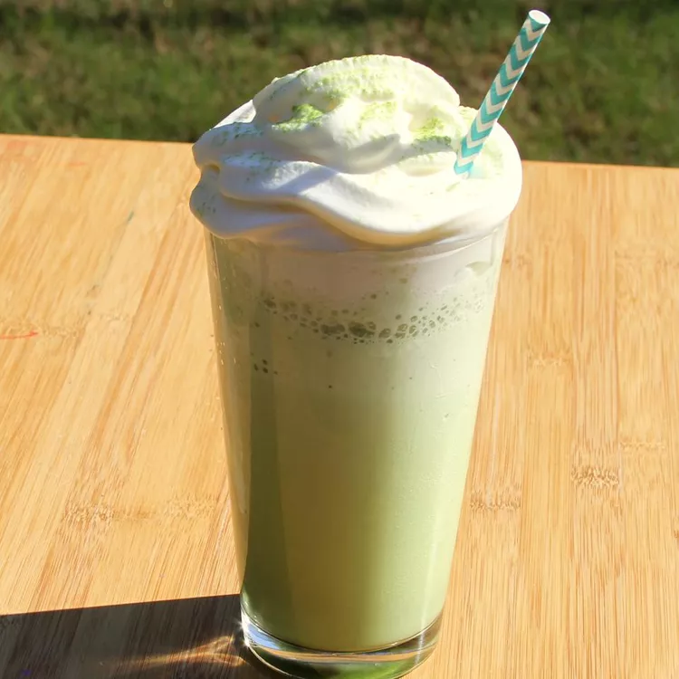

Matcha
Description
A delicious treat just like the one from Starbucks, except a lot healthier. You can use any type of milk in this reci
Ingredients
- 2 cups ice cubes
- 1 ½ cups milk
- 1 fluid ounce vanilla-flavored syrup (such as Torani®), or to taste
- 1 ½ teaspoons green tea powder (matcha)
Steps
- Heat water until it is hot but not boiling.
- Add 1 teaspoon of matcha powder to a cup.
- Pour a small amount of hot water into the cup
- Whisk the matcha well until there are no lumps.
- Add more hot water as needed.
- Whisk again until a light foam forms on top.
- Serve and enjoy your matcha.
Home